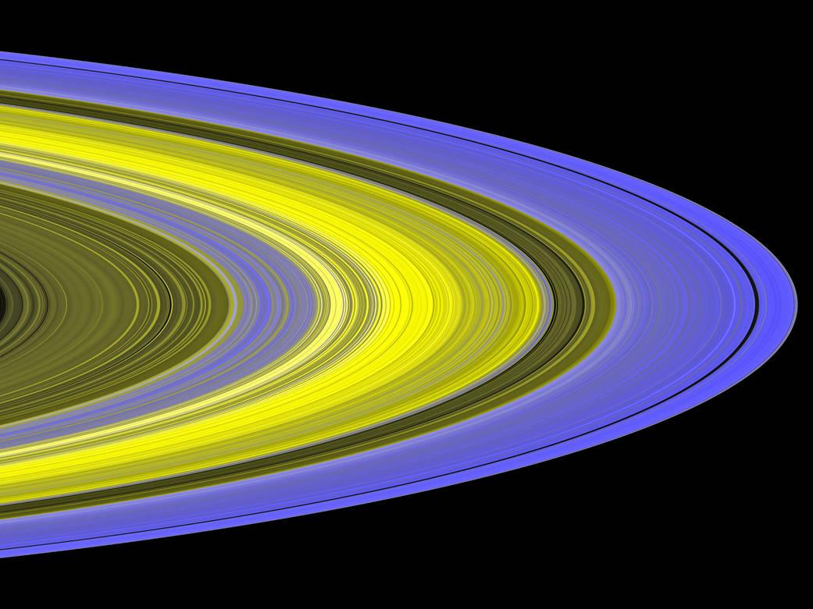
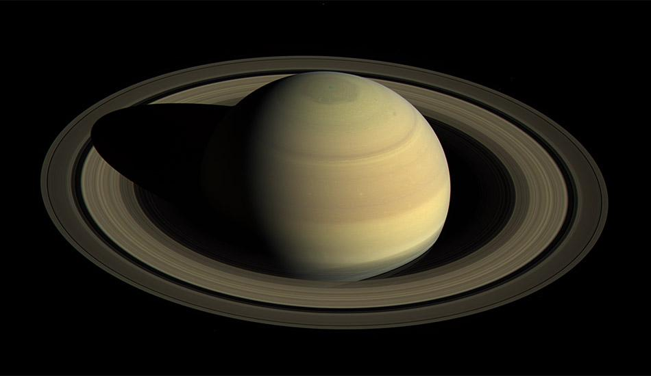
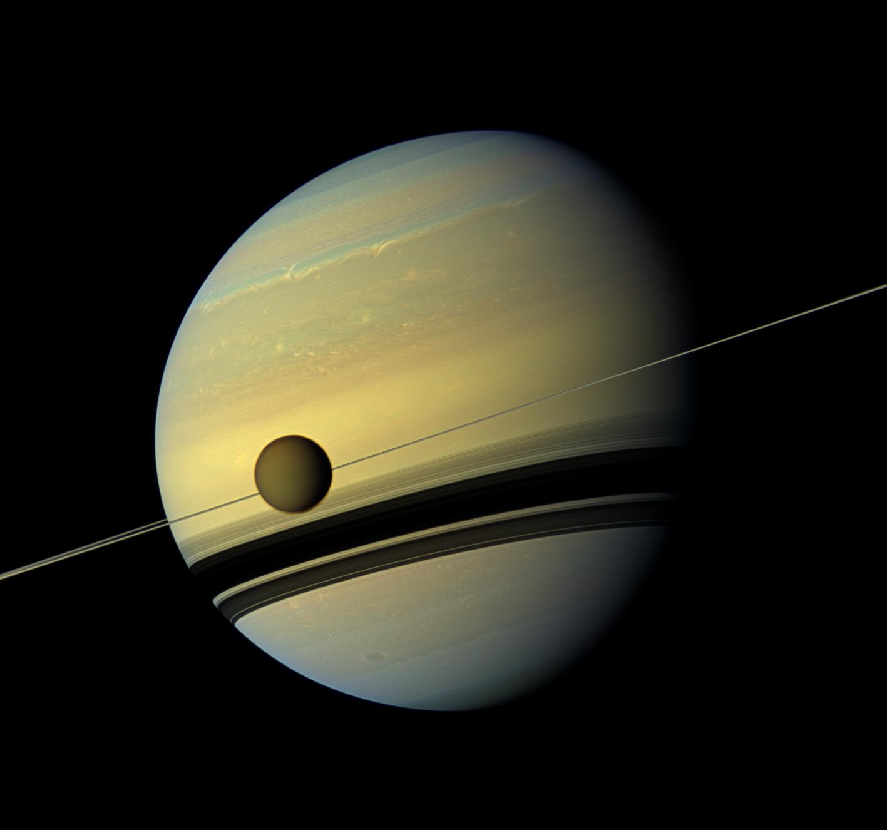
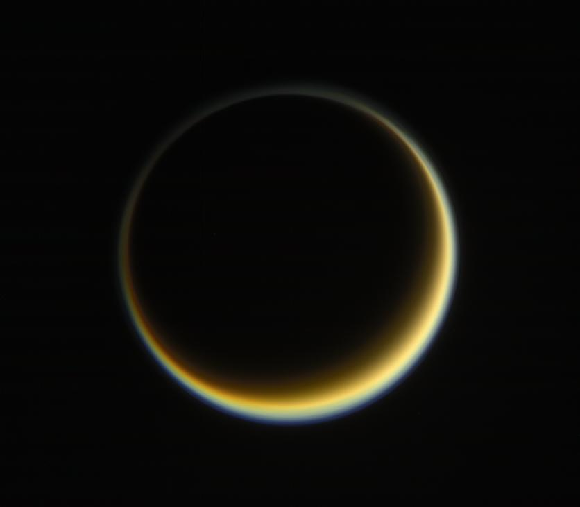
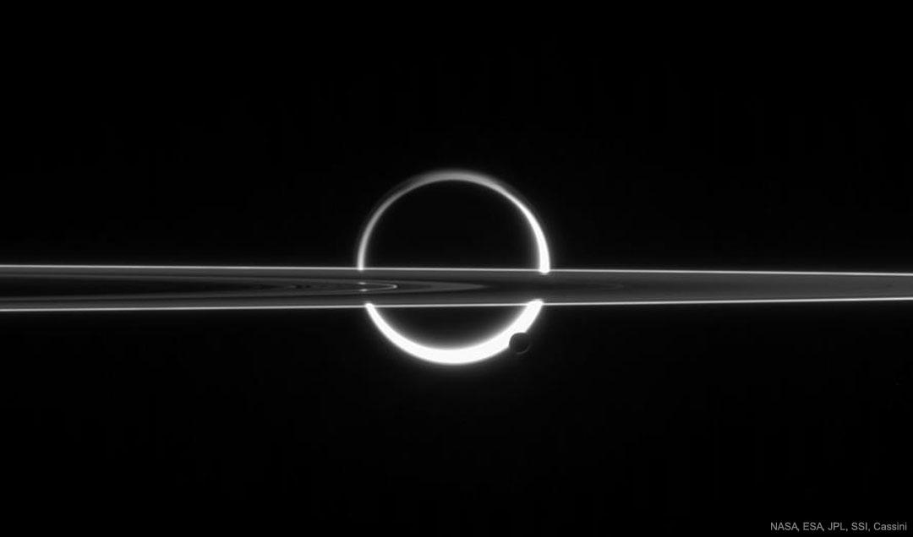
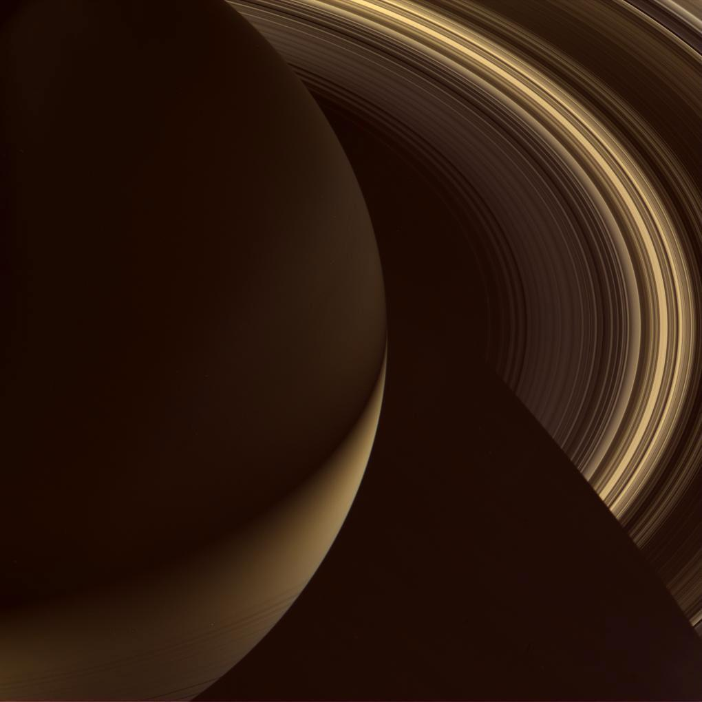

Titan
The largest moon, with a thick atmosphere and liquid methane lakes.
Saturn is the sixth planet from the Sun and the second-largest planet in the solar system, after Jupiter.
It is best known for its spectacular ring system, which makes it one of the most visually stunning planets. Like Jupiter, Saturn is a gas giant, made mostly of hydrogen and helium, and does not have a solid surface.
Despite its enormous size, Saturn is surprisingly light. It is the least dense planet, meaning it could theoretically float in water if such a large ocean existed.
Discover More ›
Saturn — the ringed wonder of the solar system.

Saturn’s rings are made of ice, rock fragments, and dust.
Saturn’s rings are its most iconic feature. They are made up of ice particles, rock fragments, and dust.
These particles range in size from tiny grains to chunks as large as mountains. The rings are divided into several main sections and are incredibly thin compared to their wide diameter.
The rings are believed to have formed from broken moons, comets, or asteroids that were pulled apart by Saturn’s strong gravity.
Saturn has a thick atmosphere made mainly of hydrogen and helium.
Its appearance includes soft golden-yellow bands and fast-moving winds. Storms can form in its atmosphere, although they are usually less dramatic than those on Jupiter.
One unique feature is a hexagon-shaped storm at Saturn’s north pole, which is unlike anything seen on other planets.

Saturn has golden bands, strong winds, and a hexagon storm near its north pole.

Saturn is huge, fast-spinning, and slightly flattened at the poles.
Saturn is massive, with a diameter of about 120,500 km. It can fit about 760 Earths inside it.
Inside Saturn, the outer layers are gaseous. Deeper layers become liquid due to pressure, and it likely has a small rocky core.
Saturn rotates quickly, completing one spin in about 10.7 hours, which causes it to appear slightly flattened at the poles.
Saturn has over 140 known moons, making it the planet with the most moons in the solar system.

The largest moon, with a thick atmosphere and liquid methane lakes.

Covered in ice and known for water geysers, possibly hiding an ocean beneath.
Saturn’s moons are major targets for future exploration.
Saturn’s gravity helps maintain its rings and influences its many moons.
Saturn has a strong magnetic field, though not as powerful as Jupiter’s.
Its gravity helps maintain its rings and influences its many moons.
Saturn’s gravity shapes its ring system and moon system.
About 10.7 hours
About 29 Earth years
Saturn experiences seasons because of its tilt.
Saturn’s seasons last much longer than seasons on Earth.
Second-largest planet in the solar system
Famous for its bright and complex ring system
Gas giant with no solid surface
Has over 140 moons
Strong winds and atmospheric storms
Least dense planet
Fast rotation and long orbit
Saturn stands out because of its beautiful ring system, which is unlike anything else in the solar system.
Its low density, massive size, and large number of moons make it a fascinating planet to study.
It represents the elegance of the outer solar system and provides insight into how planetary rings and moons form.
Saturn is not just a planet. It is a complex system of rings, moons, and atmospheric activity that continues to amaze scientists and observers alike.
A video exploring the planets in our solar system.